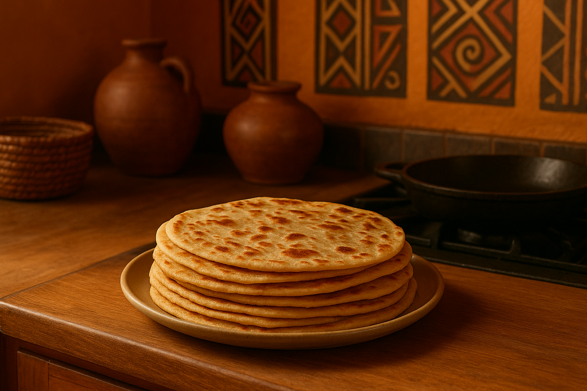

Chapati recipe

image of cooked chapati
INGREDIENTS
- 3 cups all-purpose flour
- 1 cup warm water (adjust as needed)
- 1 tsp salt
- 2 tbsp oil or melted butter (for the dough)
- extra oil for cooking
DIRECTIONS
- Mix flour, salt, and sugar in a bowl
- Add oil and warm water gradually while kneading into a soft douh
- Knead for about 10 minutes. Cover and let rest for 30 minutes
- Divide dough into equal balls (about 8)
- Roll out each ball into circle
- Heat pan and cook each chapati with a little oil until golden on both sides
- Stack them in a clean cloth to keep soft
Home